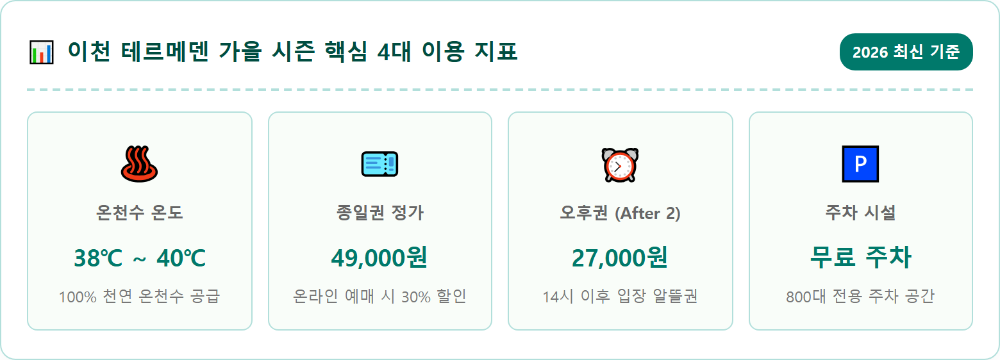
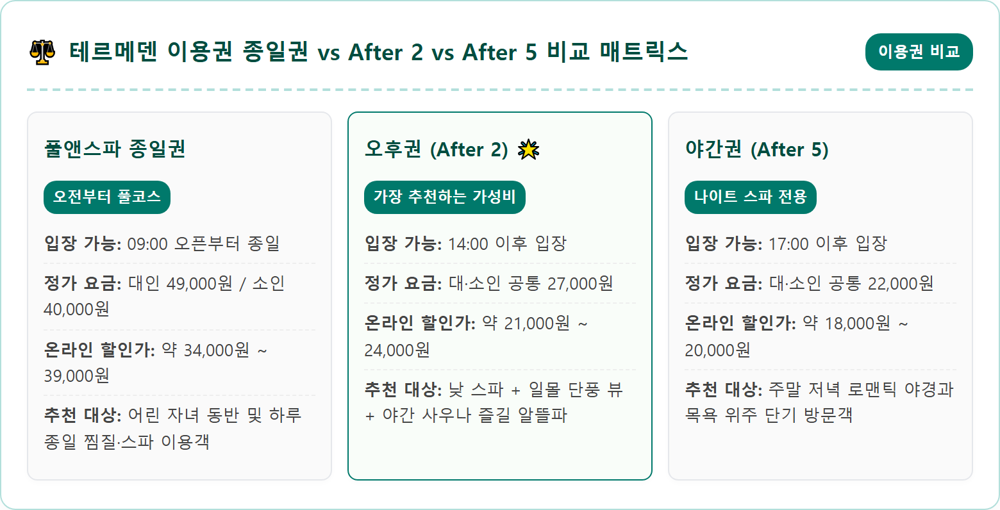
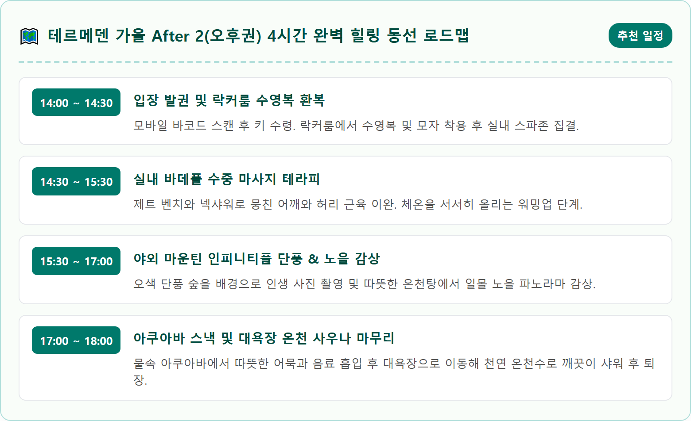
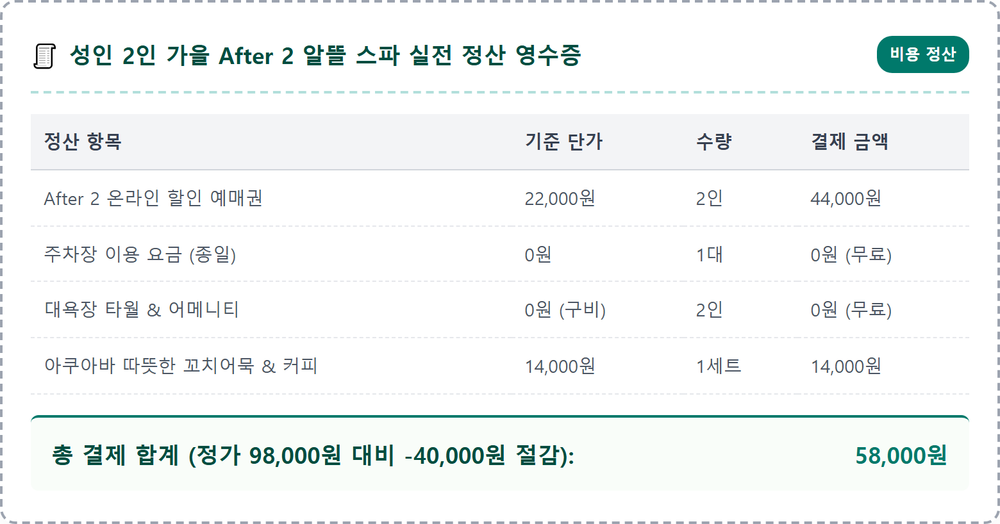
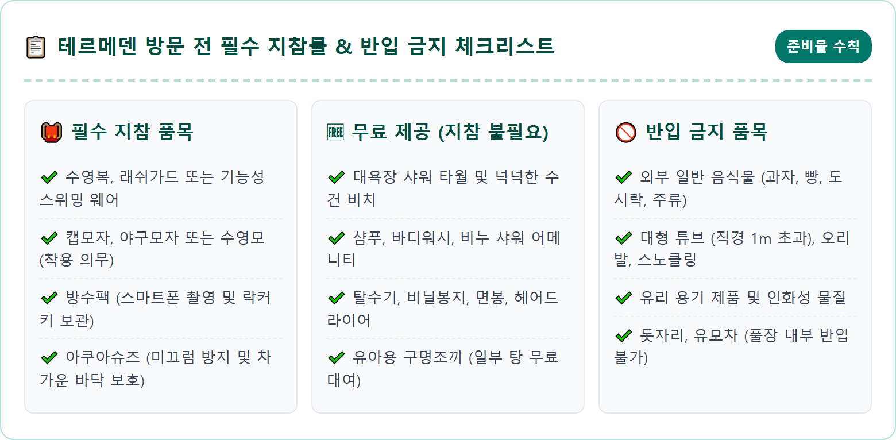
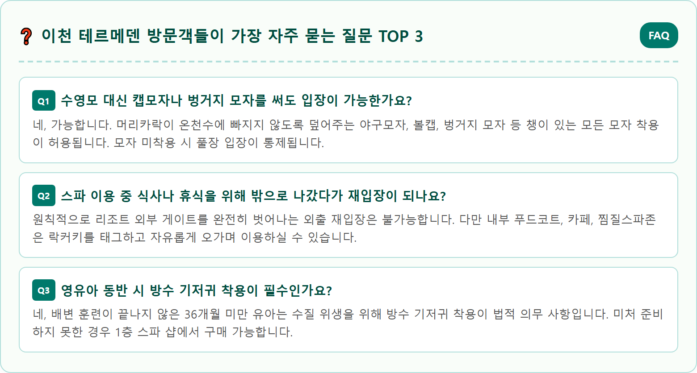

A luxurious outdoor natural hot spring infinity pool in autumn at Termeden spa resort in Icheon Korea. Warm steaming thermal water surrounded by vibrant red, orange, and yellow autumn foliage on forested hillside. People relaxing comfortably in clean steaming pool with wooden deck loungers nearby and modern European-inspired resort architecture in soft focus. Clear crisp autumn sky with warm sunlight, tranquil spa resort atmosphere. Ultra realistic photography, 8k resolution, photorealistic, cinematic composition.

아침저녁으로 찬 바람이 불어오는 늦가을 환절기에는 따뜻한 온천수에 몸을 담그고 피로를 푸는 스파 여행이 단연 인기입니다. 경기도 이천시 모가면에 위치한 테르메덴(Termeden)은 서울 강남과 판교에서 차로 1시간 남짓이면 닿을 수 있는 수도권 최고의 온천 휴양지입니다. '온천의 낙원'이라는 독일어 어원처럼, 울창한 숲에 둘러싸인 30만㎡의 넓은 부지 위에 유럽풍 인테리어와 현대적인 스파 테라피 시설이 완벽하게 갖추어져 있습니다.
특히 테르메덴의 백미는 가을 숲속의 서늘한 외기와 따뜻한 온천수가 빚어내는 환상적인 온도 대비입니다. 머리는 맑고 시원한 가을바람을 맞으며 차갑게 식히고, 몸은 부드러운 온천수에 푹 담그는 '두한족열(頭寒足熱)'의 묘미를 온전히 만끽할 수 있습니다. 야외 온천풀에 몸을 맡긴 채 눈앞으로 펼쳐지는 산림의 울긋불긋한 단풍 풍경을 바라보고 있으면 일상의 스트레스가 눈 녹듯 사라집니다.
가족, 연인, 친구 누구와 방문해도 만족도가 높은 복합 온천 리조트이지만, 정가를 다 내고 이용하기에는 비용 부담이 만만치 않습니다. 따라서 방문 시간대에 맞춘 알뜰 티켓 선택과 온라인 사전 할인 예매 전략을 반드시 숙지해야 합니다. 가을 시즌 테르메덴을 가장 알차고 경제적으로 즐길 수 있는 핵심 이용 가이드를 지금부터 상세히 공개합니다.
테르메덴의 실내 스파존을 대표하는 바데풀(Bade Pool)은 단순한 대중목욕탕의 탕이 아니라, 독일의 전통적인 수치료 수영장 개념을 동양인의 체형에 맞게 과학적으로 도입한 수중 헬스 테라피 시설입니다. 직경 30m가 넘는 거대한 실내 원형 풀장에는 강력한 수압을 이용한 제트 벤치, 하이드로 마사지, 넥샤워, 기포욕 등 10여 가지가 넘는 수중 마사지 기구가 촘촘하게 배치되어 있습니다.
온천수에 몸을 띄운 채 벽면과 바닥에서 뿜어져 나오는 미세 기포와 수압 마사지를 목, 어깨, 허리, 종아리 등 뭉친 근육 부위에 맞추면 혈액순환이 촉진되고 만성 피로와 근육통 완화에 탁월한 효과를 볼 수 있습니다. 물의 부력을 활용해 관절에 무리 없이 가벼운 수중 보행 운동을 즐길 수 있어 중장년층 어르신들에게도 절대적인 인기를 누립니다.
테르메덴의 수질 역시 자랑거리입니다. 지하 수백 미터 암반층에서 용출되는 100% 천연 온천수는 피부 자극이 적은 알칼리성 단순온천으로, 피부를 부드럽게 감싸주는 연수 특성을 지니고 있습니다. 유황 성분과 규산, 칼슘 등이 골고루 함유되어 있어 입욕 후 피부가 매끄럽고 촉촉해지는 보습 효과를 즉각 체감할 수 있습니다.

테르메덴의 실외 온천존은 자연 경사 지형을 살려 계단식으로 구성되어 있으며, 그중에서도 가장 높은 곳에 자리한 **마운틴 인피니티풀**은 SNS 인증샷의 성지입니다. 숲 가장자리를 따라 길게 뻗은 인피니티풀의 수면은 뒤편 원적산 자락의 울창한 단풍나무 숲과 경계 없이 이어지는 듯한 시각적 황홀경을 선사합니다.
물속에 몸을 담근 채 난간에 기대어 서면, 눈앞으로 붉고 노랗게 물든 숲의 파노라마가 한눈에 들어옵니다. 특히 해 질 녘 노을이 물들기 시작하는 오후 4시 30분부터 5시 30분 사이에는 온천수 위로 피어오르는 하얀 물안개와 오색 단풍, 붉은 노을빛이 한데 어우러져 몽환적인 분위기를 연출합니다. 연인들의 감성 데이트 코스로 이보다 더 완벽한 장소를 찾기 어렵습니다.
인피니티풀 아래쪽으로는 넓은 패밀리 풀과 아이들이 안전하게 물놀이를 즐길 수 있는 키즈 슬라이드, 따뜻한 정통 히노끼탕(편백나무탕)과 녹차탕, 와인탕 등 다양한 이벤트 노천탕이 마련되어 있습니다. 숲에서 불어오는 피톤치드 맑은 공기와 온천수의 따스한 기운이 온몸을 감싸며 심신에 깊은 활력을 불어넣어 줍니다.
테르메덴은 계절에 따라 하이시즌(여름·겨울 성수기)과 미들시즌(봄·가을)으로 요금 체계를 차등 적용하고 있습니다. 현재 진행 중인 가을 미들시즌의 정상 요금은 실내외 풀앤스파와 사우나, 찜질스파를 모두 이용할 수 있는 **종일권 기준 대인 49,000원, 소인(36개월~초등학생) 40,000원**입니다.
하지만 오후 시간대를 전략적으로 공략하면 반값 수준으로 스파를 즐길 수 있습니다. 오후 2시 이후에 입장하는 **'After 2(오후권)'**은 대인과 소인 구분 없이 **1인 27,000원**에 판매됩니다. 14시에 입장하더라도 야외 노천풀과 사우나를 4~5시간 동안 충분히 즐길 수 있어 가성비가 가장 뛰어난 티켓으로 손꼽힙니다.
또한 주말(금·토·일)이나 나이트 스파 운영일에 저녁 5시 이후 입장하는 **'After 5(야간권)'**은 **1인 22,000원**으로 더욱 저렴합니다. 낮 시간대의 강한 자외선을 피하고 은은한 조명 아래 낭만적인 밤 온천욕을 즐기려는 젊은 층이나 커플 여행객들에게 폭발적인 인기를 끌고 있습니다. 현장 발권보다는 온라인 플랫폼에서 추가 할인을 받아 구매하는 것이 필수입니다.

테르메덴 방문 시 가장 피해야 할 행동은 매표소 현장 키오스크에서 정가 그대로 티켓을 결제하는 것입니다. 네이버 예약, 야놀자, 여기어때, KKday 등 주요 온라인 여행 플랫폼에서는 상시 20%에서 최대 30% 이상의 할인 프로모션을 진행하고 있습니다. 방문 당일 현장에 도착해서 스마트폰으로 예매해도 1시간 이내에 바코드가 발송되므로 즉시 할인을 적용받을 수 있습니다.
네이버 예약을 이용할 경우 결제 금액의 일부가 네이버페이 포인트로 즉시 적립되는 추가 혜택이 있어 체감 할인율이 더욱 높아집니다. 예를 들어 주말 종일권 정가 49,000원짜리 티켓을 온라인 플랫폼에서 예매하면 3만 원대 중반에 구매할 수 있으며, 4인 가족 기준으로는 5만 원 이상의 경비를 절약할 수 있습니다.
또한 제휴 신용카드(현대, 비씨, 국민, 신한, 농협 등) 할인 혜택도 제공됩니다. 본인 및 동반인에 대해 20~30% 현장 할인이 적용되는 경우가 많으므로, 출발 전 지갑 속에 잠들어 있는 신용카드의 전월 실적과 제휴 여부를 확인해 보시는 것도 좋습니다. 단, 제휴 카드 할인은 온라인 특가 상품과 중복 적용되지 않으므로 할인율을 꼼꼼히 비교해 보시기 바랍니다.
테르메덴의 운영 시간은 구역별로 개장과 폐장 시각이 서로 다르므로 동선을 짤 때 정확한 시간표를 숙지하셔야 합니다. 시설의 문을 여는 매표소와 2층 대욕장(온천 사우나), 실내 바데풀은 오전 9시에 오픈하여 방문객을 맞이합니다. 반면 야외 노천풀존은 안전 점검과 수질 정화 작업 관계로 실내보다 1시간 늦은 오전 10시에 문을 엽니다.
마감 시간 역시 요일에 따라 차이가 있습니다. 평일(월~목요일)에는 야외 풀앤스파가 오후 6시에 마감되며, 대욕장 사우나는 오후 7시까지 운영됩니다. 따라서 최소한 오후 4시 이전에는 입장해야 여유롭게 모든 시설을 누릴 수 있습니다. 티켓 매표는 시설 마감 1시간 전에 최종 종료됩니다.
주말(금·토·일)과 공휴일에는 야간 나이트 스파가 가동되어 야외 풀앤스파가 밤 8시(일요일은 7시), 대욕장은 밤 9시까지 연장 운영됩니다. 밤하늘의 별을 보며 즐기는 야간 온천을 계획하신다면 금요일이나 토요일 저녁 시간대를 공략하시는 것이 훨씬 여유롭고 낭만적입니다.

테르메덴 야외 온천풀의 가장 이색적인 명물 중 하나는 바로 물속에 몸을 담근 채 음료와 간식을 즐길 수 있는 **'아쿠아바(Aqua Bar)'**입니다. 따뜻한 김이 피어오르는 풀장 한쪽에 원형 수중 의자가 마련되어 있어, 물 밖으로 나와 쌀쌀한 가을바람에 몸을 떨 필요 없이 온천욕을 이어가며 먹거리를 맛볼 수 있습니다.
아쿠아바의 인기 메뉴로는 쌀쌀한 날씨에 제격인 따뜻한 부산 꼬치어묵과 떡볶이, 츄러스, 핫도그, 그리고 시원한 생맥주와 커피, 과일주스 등이 준비되어 있습니다. 모든 결제는 락커 룸에서 지급받은 전자 락커키(원터치 팔찌)로 간편하게 태그 결제하고, 퇴장 시 1층 정산소에서 일괄 후불 정산하는 방식이어서 번거롭게 지갑이나 카드를 챙길 필요가 없습니다.
보다 든든한 식사를 원하신다면 2층 실내에 위치한 푸드코트를 이용하시면 됩니다. 한식, 양식, 분식 등 다양한 메뉴를 갖추고 있으며 이천 쌀로 지은 든든한 찌개 백반과 바삭한 왕돈가스가 특히 인기가 높습니다. 쾌적한 통창 너머로 야외 스파 전경을 내려다보며 식사를 즐길 수 있도록 테이블 간격이 넓게 배치되어 있습니다.
테르메덴을 방문하기 전 챙겨야 할 준비물 중 가장 중요한 것은 **수영복과 모자**입니다. 래쉬가드, 비키니, 원피스 수영복은 물론 기능성 스포츠 웨어도 허용됩니다. 또한 수질 관리를 위해 머리카락을 완전히 덮는 모자 착용이 의무화되어 있습니다. 정통 수영모 외에도 야구모자, 볼캡, 벙거지 캡모자 등 챙이 있는 일반 모자도 모두 착용 가능하므로 취향에 맞게 준비하시면 됩니다.
신발의 경우 맨발 입장도 가능하지만, 가을철에는 야외 데크 바닥이 차갑고 미끄러울 수 있으므로 바닥이 고무로 된 **아쿠아슈즈**를 지참하시는 것을 적극 추천합니다. 크록스나 슬리퍼, 힐 형태의 신발은 안전사고 예방을 위해 착용이 금지됩니다. 타월과 샴푸, 바디워시, 스킨로션, 헤어드라이어는 대욕장 내부에 무료로 넉넉하게 구비되어 있어 굳이 무겁게 챙겨가지 않아도 됩니다.
음식물 반입 규정은 엄격히 통제됩니다. 유리병 음료, 캔 음료, 과자, 김밥, 치킨 등 모든 외부 음식물은 반입이 금지되며, 입장 전 가방 검사를 진행합니다. 단, 껍질과 씨앗을 완전히 제거하여 밀폐용기에 담은 생과일, 유아를 위한 이유식, 환자용 특별식, 페트병에 담긴 물과 무알콜 음료는 예외적으로 반입이 허용됩니다. 반입 불가 물품은 입구 보관함에 맡긴 후 퇴장 시 찾아가셔야 합니다.

테르메덴은 서울 및 수도권에서의 접근성이 매우 뛰어납니다. 자가용을 이용할 경우 중부고속도로 남이천IC에서 빠져나오면 불과 3분(약 2km) 만에 리조트 정문에 도착할 수 있어 고속도로 접근성이 전국 최고 수준입니다. 영동고속도로를 이용할 경우에는 덕평IC나 이천IC를 통해 국도로 15분 정도 이동하면 수월하게 닿을 수 있습니다.
주차 시설은 리조트 본관 바로 앞 지상 주차장과 제2, 제3 주차장을 합쳐 약 800대 이상의 차량을 무료로 수용할 수 있습니다. 전기차 충전 시설(급속 및 완속 충전기)도 넉넉하게 갖추어져 있어 온천욕을 즐기는 동안 편리하게 차량을 충전할 수 있습니다. 주말 피크 시간대(오전 11시~오후 2시)에는 본관 앞 주차장이 만차될 수 있으나, 외곽 주차장에서도 도보로 2~3분이면 본관 입구에 도달하므로 주차 스트레스가 거의 없습니다.
대중교통을 이용하는 뚜벅이 여행객도 편리하게 방문할 수 있습니다. 서울 강남고속버스터미널이나 동서울터미널에서 이천종합터미널로 이동한 후, 터미널 앞에서 테르메덴행 시내버스(26-1번 등)를 탑승하면 약 30분 만에 도착합니다. 또한 테르메덴에서는 주말 및 성수기 특정 시즌에 이천역(경강선 전철) 및 터미널을 오가는 무료 셔틀버스를 탄력적으로 운행하므로, 출발 전 공식 홈페이지 공지사항의 셔틀버스 시간표를 확인해 보시기 바랍니다.
